Créatif, curieux, impliqué. Je crée des visuels qui racontent quelque chose. Publicité, graphisme, photo, vidéo.

JAURYS MAIGRET
Direction ArtistiqueCréer, imaginer, donner vie : c'est ce qui fait battre mon quotidien. Chaque projet est pour moi une occasion de raconter quelque chose qui marque : une image, une campagne, une émotion. Passionné par la direction artistique et la communication visuelle, j'explore la publicité comme un terrain de jeu où le concept prime autant que l'esthétique. Des idées plein la tête, et l'envie de les faire exister dans l'univers de la pub et du graphisme.
Je suis actuellement le Master Direction Artistique de l'ESP Paris et je recherche une entreprise partenaire dans l'univers de la publicité, du graphisme ou de la création visuelle, à Paris et alentours.
Photographie automobile, campagnes pub, affiches de marque et créations vidéo. Cliquez pour explorer.
Affiches, campagnes de marque et expérience numérique.
15 pièces


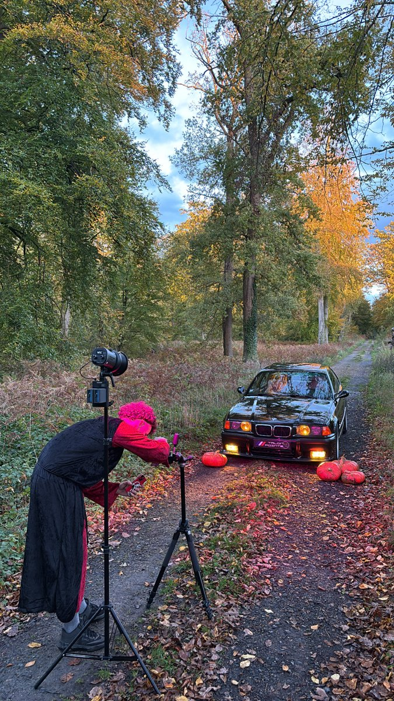
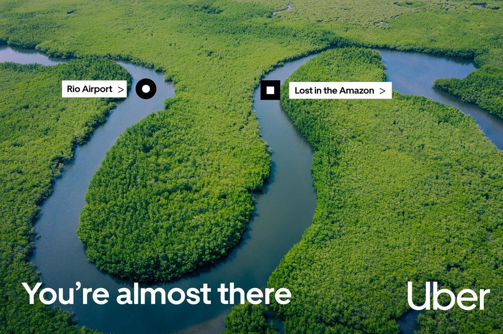


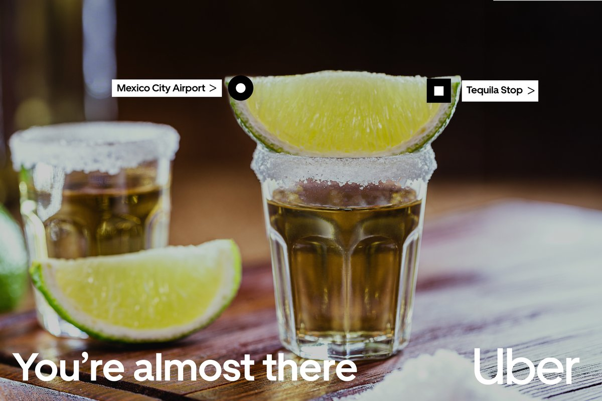


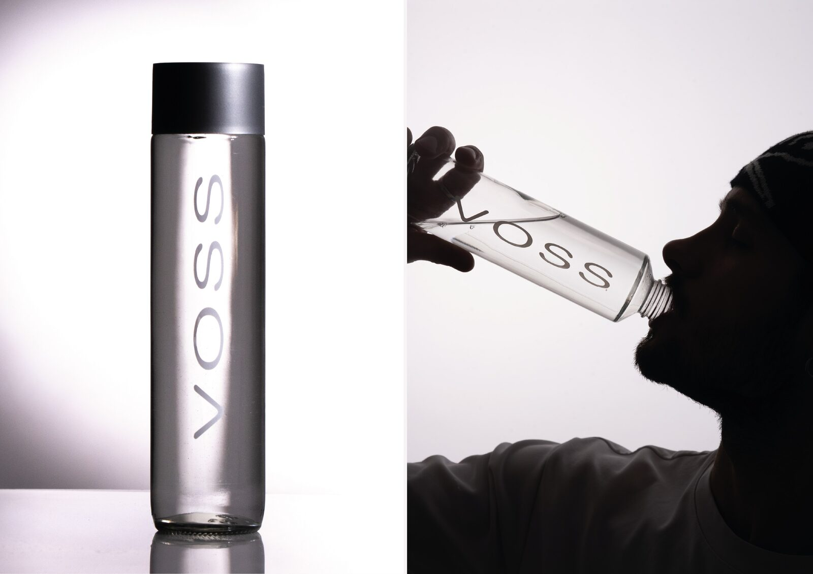

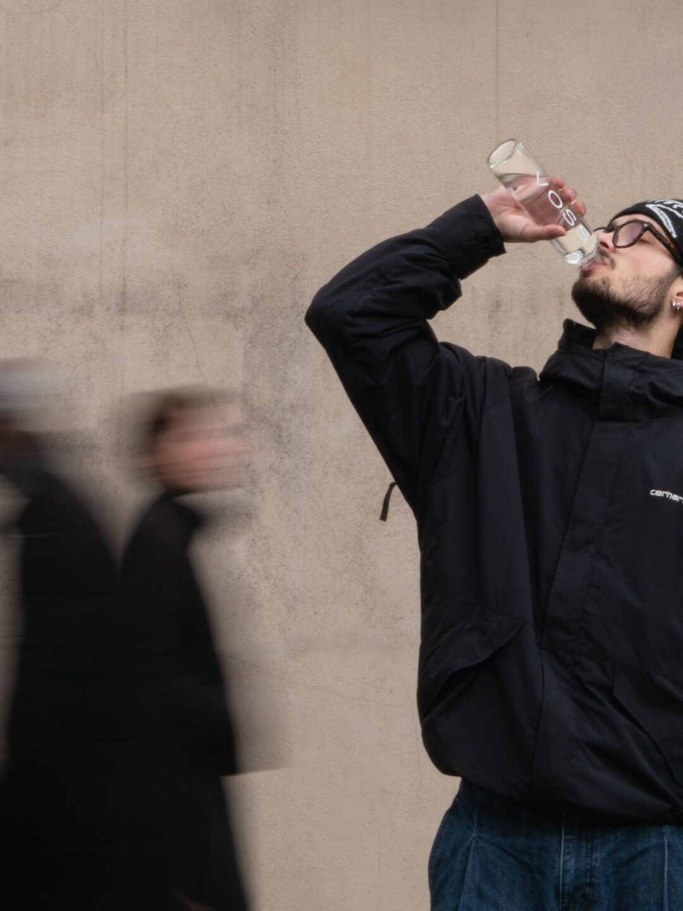


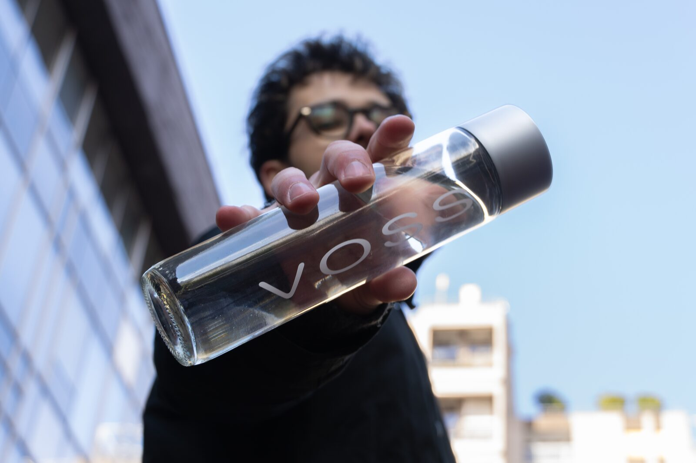
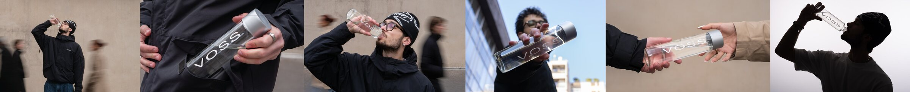
Concession, détails et mises en scène, pour Talon Pointe.
6 pièces


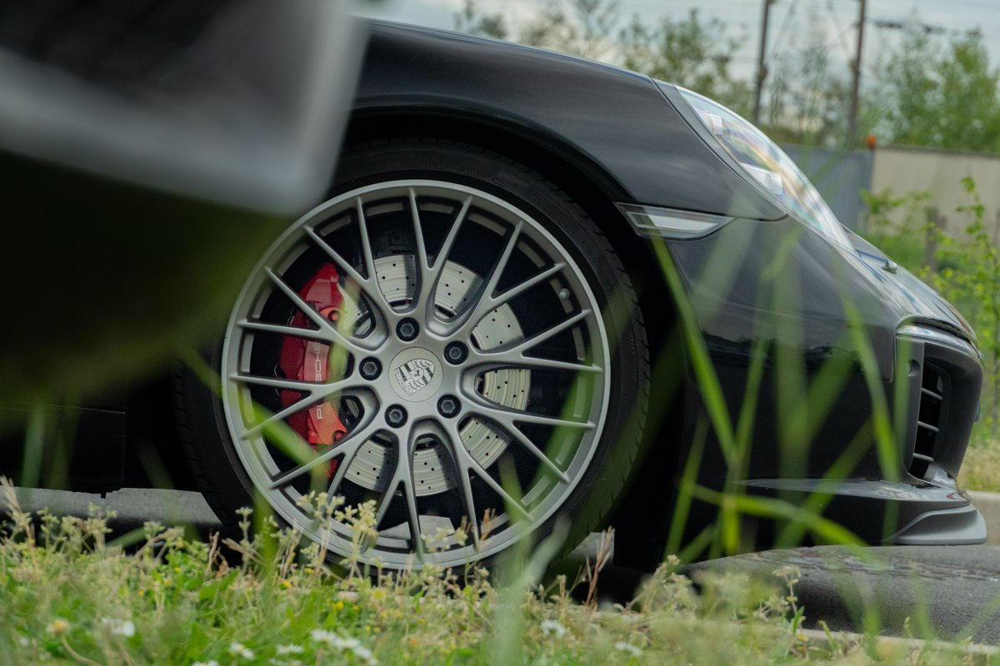
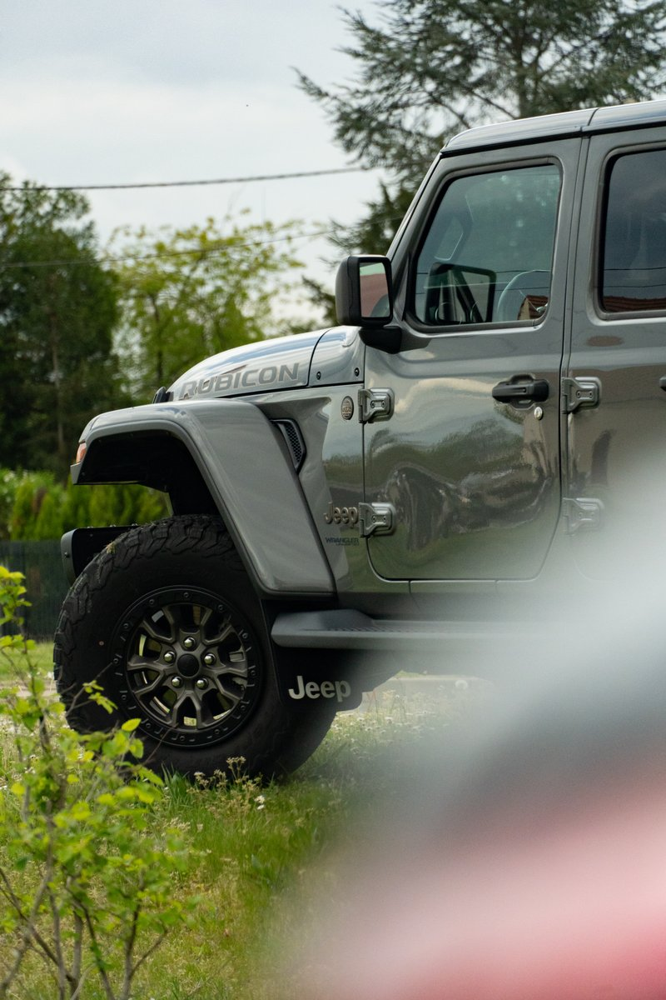
Poses longues, Voie lactée, lumière des villages à l'horizon.
4 pièces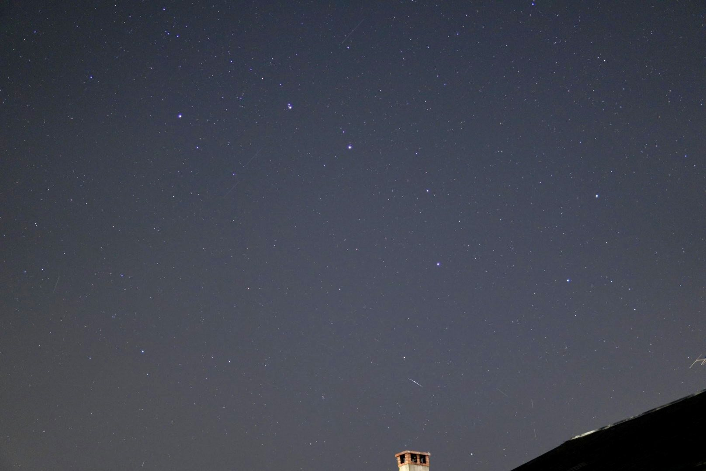

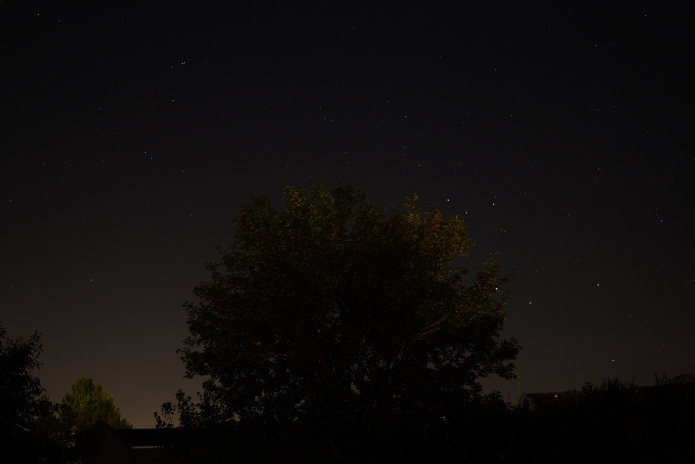
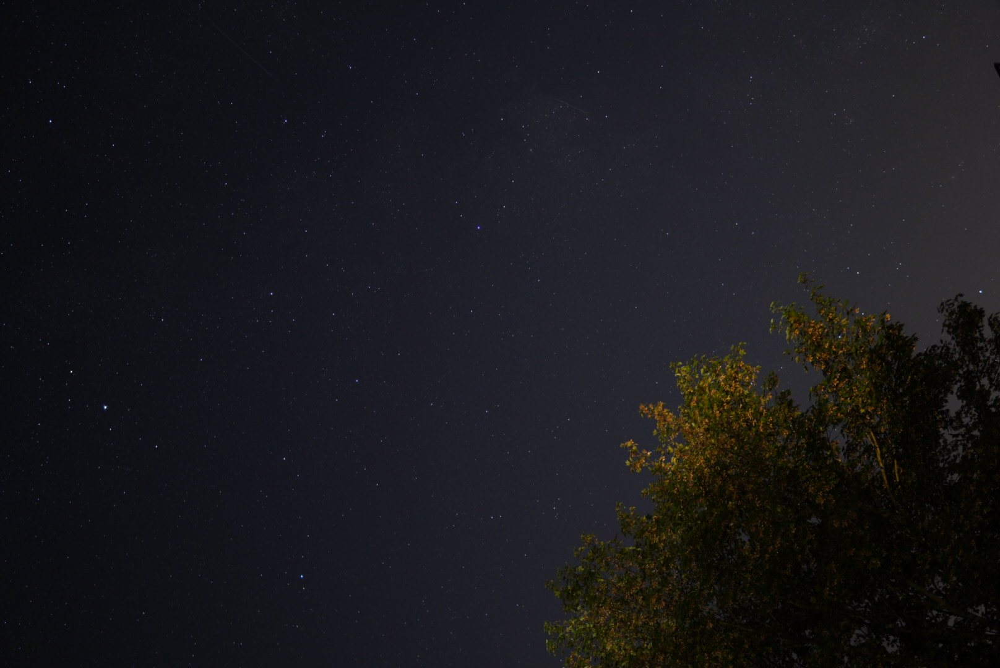
Tournage, montage et post-production.
5 pièces


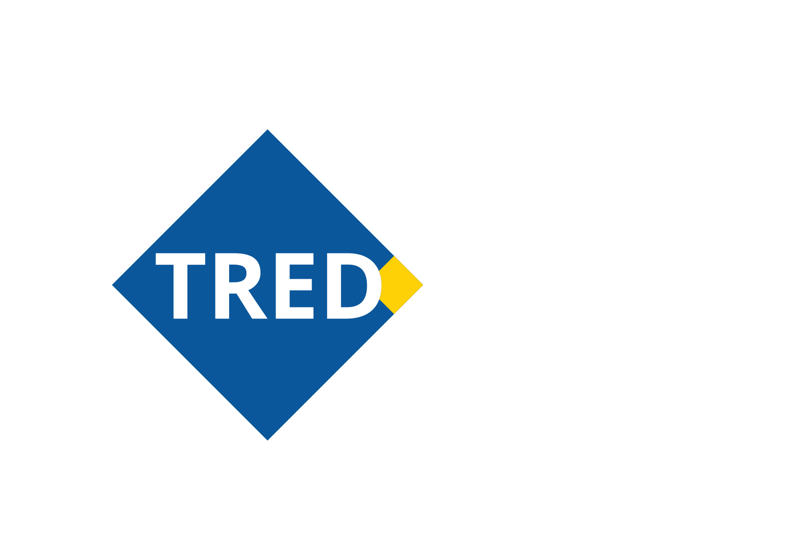
Formation en direction artistique orientée publicité, graphisme et création visuelle.
Apprentissage des codes de la publicité, graphisme et conception de campagnes.
Socle fondamental en communication, stratégie de contenu et production visuelle.
Disponible immédiatement, à Paris et en Île-de-France.Master Direction Artistique en alternance, ESP Paris.
maigretjaurys8@gmail.comParis 75 000
Dès maintenant · Paris & Île-de-France
Permis B · Véhiculé